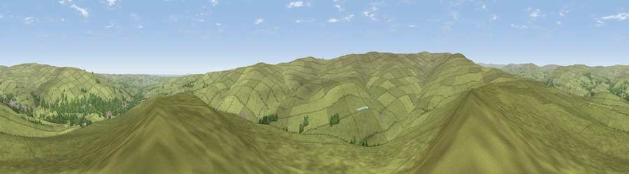

Viewpoint near Stanhope
#15642 in England · top 40% of its area beats it · near StanhopeThe view, rendered

A 360° render of this exact spot computed from the terrain model, tree cover and land cover — summer colours, afternoon light, calibrated against photographs of famous viewpoints. Real trees, hedges and buildings will differ in detail.
The panorama
Grey silhouette: terrain skyline in each direction (720 bearings, Earth curvature and refraction included). Dashed green: skyline with trees (+15 m) and buildings (+8 m) as obstacles. Blue strip: how far the ground is visible on each bearing.
Where the view opens
Wedge length = distance to the farthest visible ground on that bearing (vegetation-aware). Rings at 10, 25 and 50 km.
What fills the view
96% grassland · 4% woodland ·
Angular shares of the visible panorama (visual magnitude), not map area. Landscape diversity 0.09 (0–1 Shannon).
Key numbers
More beautiful places nearby
The staircase of upgrades: each row has a higher view potential than everything closer. Driving times are estimates from straight-line distance, calibrated against real road routing — check an actual route before setting out.
| Place | Direction | Drive | Score |
|---|---|---|---|
| Viewpoint near Stanhope | W · 3 km | ~8 min | 62.8 |
| Five Pikes | SSE · 4 km | ~8 min | 66.9 |
| Viewpoint c10644_7960 | SSW · 4 km | ~9 min | 69.6 |
| Viewpoint near Frosterley | S · 4 km | ~9 min | 70.6 |
| Collier Law | NNE · 6 km | ~13 min | 71.7 |
| Viewpoint near Eggleston | S · 12 km | ~22 min | 76.0 |
| Pontop Pike | NE · 23 km | ~38 min | 77.8 |
| Little Dun Fell | W · 29 km | ~46 min | 78.4 |
54.71833, -2.00889 · source: screening · position refined by local search. Computed location — check access rights before visiting.